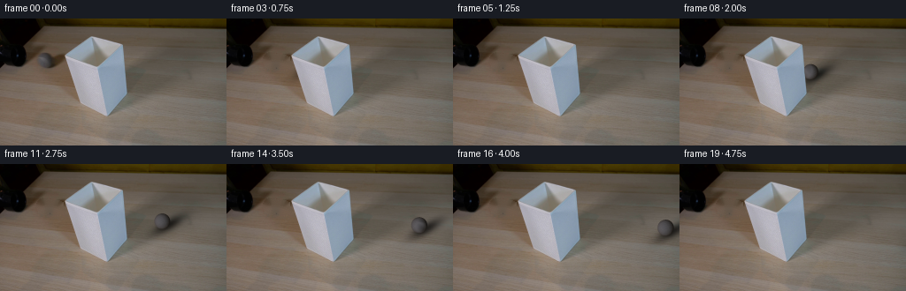
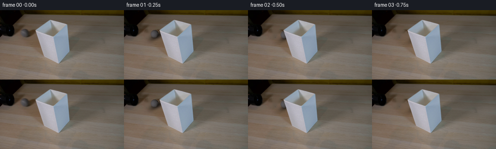
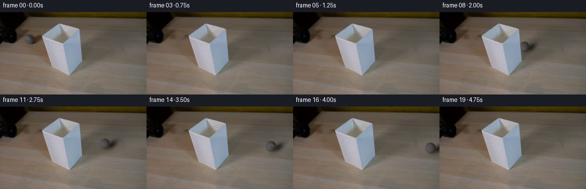
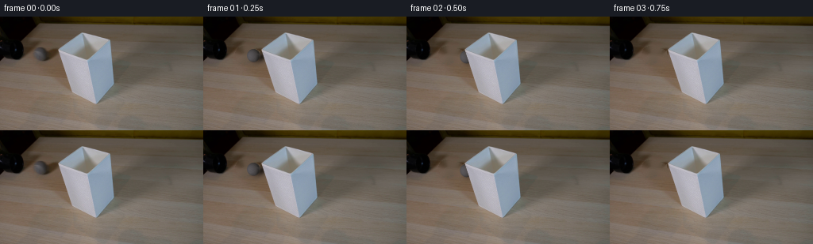

CODING AGENTS AS PIXEL WORLD MODELS
traex/GPT-6.1-Sol · 0147
点击播放 · 原生 RGB 像素
逐轮保存的候选
回放视频、检查图与代码变化。
每份候选均可单独播放。实际图片检查记录在下方工具轨迹中。
候选 01播放与检查图
点击播放 · 原生 RGB 像素


展开代码变化
--- 上一保存版本
+++ 本次保存版本
@@ -0,0 +1,190 @@
+from pathlib import Path
+import numpy as np
+from PIL import Image
+import cv2
+from scipy.ndimage import gaussian_filter, map_coordinates
+from scipy.optimize import least_squares
+import artifact_io
+
+ROOT=Path(__file__).resolve().parent
+H,W=144,256
+Y,X=np.mgrid[:H,:W].astype(np.float64)
+SOURCE=np.asarray(Image.open(ROOT/'first_frame.png').convert('RGB'),dtype=np.uint8)
+original=SOURCE.astype(np.float64)
+CX,CY,RADIUS=50.3,47.2,8.1
+
+
+def shade_matte():
+ # The shade is a static foreground object, including its inner surface.
+ y=np.arange(H,dtype=float)
+ left=np.interp(y,[0,19,20,41.5,44,84,98,109.7,143],[104,104,102.8,72.6,73.9,86.5,96.1,125.5,125.5])
+ right=np.interp(y,[0,19,20,28.6,42,84.5,109.7,143],[104,104,104.7,138.3,139.7,143.0,125.5,125.5])
+ a=np.clip(np.minimum(X-left[:,None],right[:,None]-X)+.65,0,1)
+ a[(Y<19.5)|(Y>110)]=0
+ # At the edges, infer antialiasing from the original color transition.
+ for yy in range(20,110):
+ l,r=left[yy],right[yy]
+ for xx in range(max(0,int(l)-2),min(W,int(l)+3)):
+ xb=max(0,int(l)-3);xf=min(W-1,int(l)+3)
+ b=original[yy,xb];f=original[yy,xf]
+ d=f-b
+ al=np.dot(original[yy,xx]-b,d)/(np.dot(d,d)+1.e-9)
+ a[yy,xx]=np.clip(al,0,1)
+ for xx in range(max(0,int(r)-2),min(W,int(r)+3)):
+ xb=min(W-1,int(r)+3);xf=max(0,int(r)-3)
+ b=original[yy,xb];f=original[yy,xf];d=f-b
+ al=np.dot(original[yy,xx]-b,d)/(np.dot(d,d)+1.e-9)
+ a[yy,xx]=np.clip(al,0,1)
+ return a
+
+SHADE=shade_matte()
+
+
+def construct_background():
+ ball=((X-50.4)/10.0)**2+((Y-47.3)/10.0)**2<1
+ # Original ball casts a soft shadow to the right, toward the back of the tabletop.
+ sx=X-61.2;sy=Y-48.2
+ shadow=((sx-.26*sy)/14.4)**2+(sy/8.7)**2<1
+ remove=(ball|shadow)&(SHADE<.025)
+ # Estimate wood under the stationary lampshade, solely as an inpainting boundary.
+ u=(X-58)/22.;v=(Y-48)/17.
+ basis=np.stack([np.ones_like(u),u,v,u*u,u*v,v*v],axis=-1)
+ known=(X>38)&(X<83)&(Y>29)&(Y<68)&(~ball)&(~shadow)&(SHADE<.01)
+ known &= ((Y<39)|(Y>57)|(X<42))
+ params=np.linalg.lstsq(basis[known],original[known],rcond=None)[0]
+ wood=np.clip(basis@params,0,255)
+ proxy=original.copy()
+ under=(X>69)&(X<99)&(Y>28)&(Y<73)&(SHADE>.01)
+ proxy[under]=wood[under]
+ fill=cv2.inpaint(np.round(proxy).astype(np.uint8),remove.astype(np.uint8)*255,4,cv2.INPAINT_TELEA).astype(float)
+ # Limit the repair to the ball and its original contact/cast shadow.
+ base=original.copy()
+ base[remove]=fill[remove]
+ Image.fromarray(np.uint8(np.clip(base,0,255))).save(ROOT/'.tmp'/'clean_plate.png')
+ return base,remove
+
+BACKGROUND,REMOVE=construct_background()
+
+# Fit the observed, softly lit gray ball's diffuse appearance to its first-frame pixels.
+nx=(X-CX)/RADIUS;ny=(Y-CY)/RADIUS
+nz=np.sqrt(np.maximum(0,1-nx*nx-ny*ny))
+A=np.stack([np.ones_like(nx),nx,ny,nz],axis=-1)
+fit=(nx*nx+ny*ny<.64)
+LIGHT=np.linalg.lstsq(A[fit],original[fit],rcond=None)[0]
+residual=original-A@LIGHT
+# Photograph-derived felt variation, with a smooth transition to analytic unseen texture.
+TEXTURE=residual.mean(axis=-1)
+TEXTURE=gaussian_filter(TEXTURE,.48)
+
+
+def fit_shadow():
+ # The original cast shadow provides the lighting direction and its penumbra.
+ sample=REMOVE & (nx*nx+ny*ny>1.38)&(X>54)&(SHADE<.01)
+ observed=(original/(BACKGROUND+1)).mean(axis=-1)
+ def prediction(p):
+ ox,oy,rx,ry,angle,strength=p
+ dx=X-ox;dy=Y-oy
+ u=dx*np.cos(angle)+dy*np.sin(angle)
+ v=-dx*np.sin(angle)+dy*np.cos(angle)
+ q=(u/rx)**2+(v/ry)**2
+ return 1-strength*np.exp(-q*1.4)
+ p0=[61,48,12,6,-.25,.6]
+ lower=[55,43,6,2,-.8,.1];upper=[70,54,20,11,.4,.85]
+ sol=least_squares(lambda p:(prediction(p)-observed)[sample],p0,bounds=(lower,upper),max_nfev=100)
+ return sol.x
+
+SHADOW_PARAMETERS=fit_shadow()
+
+
+def felt(normals):
+ x,y,z=normals
+ # Surface-fixed, multiscale felt: no random variation between frames.
+ noise=(np.sin(42*x+11*y+16*z)*np.sin(29*y-19*z+4*x)*1.25
+ +np.sin(13*x-17*y+12*z)*.9
+ +np.cos(28*z-8*x+7*y)*.75)
+ # A narrow, subtle, continuous tennis-ball seam on the neutral-gray felt.
+ lat=np.arctan2(z,x)
+ seam_distance=y-.52*np.sin(2*lat+.65)
+ seam=3.0*np.exp(-(seam_distance/.065)**2)
+ analytic=noise+seam-.65
+ # Retain the actual ball's visible material details in its initial material orientation.
+ visible=np.clip((z-.15)/.5,0,1)
+ photo=map_coordinates(TEXTURE,[CY+RADIUS*y,CX+RADIUS*x],order=1,mode='nearest')
+ photo=np.clip(photo,-9,9)
+ return visible*photo+(1-visible)*analytic
+
+
+def render_ball(cx,cy,r,theta):
+ scale=4
+ x0=max(0,int(np.floor(cx-r-2)));x1=min(W,int(np.ceil(cx+r+2)))
+ y0=max(0,int(np.floor(cy-r-2)));y1=min(H,int(np.ceil(cy+r+2)))
+ color=np.zeros((H,W,3),np.float64);alpha=np.zeros((H,W),np.float64)
+ if x1<=x0 or y1<=y0:return color,alpha
+ yy,xx=np.mgrid[:(y1-y0)*scale,:(x1-x0)*scale]
+ xx=(xx+.5)/scale+x0-.5;yy=(yy+.5)/scale+y0-.5
+ nx=(xx-cx)/r;ny=(yy-cy)/r;q=nx*nx+ny*ny
+ nz=np.sqrt(np.maximum(0,1-q))
+ mask=(q<=1).astype(float)
+ # Rolling about the tabletop axis perpendicular to the straight track.
+ direction=np.array([1.,.13,0.]);direction/=np.linalg.norm(direction)
+ axis=np.array([-direction[1],direction[0],0.])
+ normals=np.stack([nx,ny,nz],axis=0)
+ cos,sin=np.cos(-theta),np.sin(-theta)
+ dot=axis[0]*nx+axis[1]*ny
+ cross=np.stack([axis[1]*nz,-axis[0]*nz,axis[0]*ny-axis[1]*nx])
+ rotated=normals*cos+cross*sin+axis[:,None,None]*dot[None]*(1-cos)
+ texture=felt(rotated)
+ rgb=(LIGHT[0]+nx[...,None]*LIGHT[1]+ny[...,None]*LIGHT[2]+nz[...,None]*LIGHT[3])
+ rgb+=texture[...,None]*np.array([1.0,.96,1.02])
+ rgb=np.clip(rgb,20,120)
+ premul=rgb*mask[...,None]
+ target=(x1-x0,y1-y0)
+ a=cv2.resize(mask,target,interpolation=cv2.INTER_AREA)
+ c=cv2.resize(premul,target,interpolation=cv2.INTER_AREA)
+ color[y0:y1,x0:x1]=c
+ alpha[y0:y1,x0:x1]=a
+ return color,alpha
+
+
+def render(t):
+ # Uniform real-time sampling; a small rolling resistance slows the ball only slightly.
+ dx=50*t-.65*t*t
+ cx=CX+dx;cy=CY+.13*dx
+ r=RADIUS*(1+.00075*dx)
+ theta=np.log(1+.00075*dx)/(.00075*RADIUS)*np.sqrt(1+.13**2)
+ base=BACKGROUND.copy()
+ ox,oy,rx,ry,angle,strength=SHADOW_PARAMETERS
+ scale=r/RADIUS
+ sx=cx+(ox-CX)*scale;sy=cy+(oy-CY)*scale
+ px=X-sx;py=Y-sy
+ u=px*np.cos(angle)+py*np.sin(angle)
+ v=-px*np.sin(angle)+py*np.cos(angle)
+ q=(u/(rx*scale))**2+(v/(ry*scale))**2
+ shadow=strength*np.exp(-1.4*q)
+ # Small dense contact shadow is attached to the rolling sphere.
+ contact=.17*np.exp(-((X-cx)/(r*.82))**2-((Y-(cy+r*.88))/(r*.22))**2)
+ visibility=1-SHADE
+ base*=1-(shadow*(1-contact)+contact)[...,None]*visibility[...,None]
+ color,alpha=render_ball(cx,cy,r,theta)
+ a=alpha*visibility
+ base=base*(1-a[...,None])+color*visibility[...,None]
+ return np.uint8(np.clip(np.rint(base),0,255))
+
+
+def main():
+ (ROOT/'.tmp').mkdir(exist_ok=True)
+ frames=[SOURCE.copy()]
+ for i in range(1,20):
+ frames.append(render(i/4.))
+ frames=np.stack(frames)
+ # Save the reproducible RGB artifact and local intermediate render diagnostics.
+ np.save(ROOT/'.tmp'/'candidate_frames.npy',frames)
+ Image.fromarray(render(0)).save(ROOT/'.tmp'/'initial_reconstruction.png')
+ np.save(ROOT/'.tmp'/'shade_alpha.npy',SHADE)
+ print('Diffuse coefficients:',LIGHT.round(3).tolist())
+ print('Shadow parameters:',SHADOW_PARAMETERS.round(3).tolist())
+ print('First frame exact:',np.array_equal(frames[0],SOURCE))
+ artifact_io.save(frames,ROOT)
+
+if __name__=='__main__':
+ main()
候选 02播放与检查图
点击播放 · 原生 RGB 像素

展开代码变化
--- 上一保存版本
+++ 本次保存版本
@@ -41,7 +41,7 @@
def construct_background():
- ball=((X-50.4)/10.0)**2+((Y-47.3)/10.0)**2<1
+ ball=((X-50.4)/10.8)**2+((Y-47.3)/10.7)**2<1
# Original ball casts a soft shadow to the right, toward the back of the tabletop.
sx=X-61.2;sy=Y-48.2
shadow=((sx-.26*sy)/14.4)**2+(sy/8.7)**2<1
@@ -71,7 +71,20 @@
A=np.stack([np.ones_like(nx),nx,ny,nz],axis=-1)
fit=(nx*nx+ny*ny<.64)
LIGHT=np.linalg.lstsq(A[fit],original[fit],rcond=None)[0]
-residual=original-A@LIGHT
+def diffuse(normals,params):
+ nx,ny,nz=normals
+ lx,ly=params[6:8]
+ lz=np.sqrt(max(0,1-lx*lx-ly*ly))
+ intensity=np.maximum(0,lx*nx+ly*ny+lz*nz)
+ return params[:3]+intensity[...,None]*params[3:6]
+
+surface_fit=(nx*nx+ny*ny<.8)
+DIFFUSE=least_squares(
+ lambda p:(diffuse((nx,ny,nz),p)[surface_fit]-original[surface_fit]).ravel(),
+ [34,31,31,70,70,70,-.55,.04],
+ bounds=([15,15,15,20,20,20,-.8,-.3],[60,60,60,110,110,110,-.2,.3])
+).x
+residual=original-diffuse((nx,ny,nz),DIFFUSE)
# Photograph-derived felt variation, with a smooth transition to analytic unseen texture.
TEXTURE=residual.mean(axis=-1)
TEXTURE=gaussian_filter(TEXTURE,.48)
@@ -79,7 +92,7 @@
def fit_shadow():
# The original cast shadow provides the lighting direction and its penumbra.
- sample=REMOVE & (nx*nx+ny*ny>1.38)&(X>54)&(SHADE<.01)
+ sample=REMOVE & (nx*nx+ny*ny>1.15)&(X>57)&(SHADE<.01)
observed=(original/(BACKGROUND+1)).mean(axis=-1)
def prediction(p):
ox,oy,rx,ry,angle,strength=p
@@ -88,8 +101,8 @@
v=-dx*np.sin(angle)+dy*np.cos(angle)
q=(u/rx)**2+(v/ry)**2
return 1-strength*np.exp(-q*1.4)
- p0=[61,48,12,6,-.25,.6]
- lower=[55,43,6,2,-.8,.1];upper=[70,54,20,11,.4,.85]
+ p0=[62,49,11,4,-.5,.6]
+ lower=[59,46,8,2,-.9,.2];upper=[66,52,12,6,-.1,.8]
sol=least_squares(lambda p:(prediction(p)-observed)[sample],p0,bounds=(lower,upper),max_nfev=100)
return sol.x
@@ -134,7 +147,7 @@
cross=np.stack([axis[1]*nz,-axis[0]*nz,axis[0]*ny-axis[1]*nx])
rotated=normals*cos+cross*sin+axis[:,None,None]*dot[None]*(1-cos)
texture=felt(rotated)
- rgb=(LIGHT[0]+nx[...,None]*LIGHT[1]+ny[...,None]*LIGHT[2]+nz[...,None]*LIGHT[3])
+ rgb=diffuse((nx,ny,nz),DIFFUSE)
rgb+=texture[...,None]*np.array([1.0,.96,1.02])
rgb=np.clip(rgb,20,120)
premul=rgb*mask[...,None]
@@ -162,7 +175,7 @@
q=(u/(rx*scale))**2+(v/(ry*scale))**2
shadow=strength*np.exp(-1.4*q)
# Small dense contact shadow is attached to the rolling sphere.
- contact=.17*np.exp(-((X-cx)/(r*.82))**2-((Y-(cy+r*.88))/(r*.22))**2)
+ contact=.12*np.exp(-((X-cx)/(r*.55))**2-((Y-(cy+r*.98))/(r*.14))**2)
visibility=1-SHADE
base*=1-(shadow*(1-contact)+contact)[...,None]*visibility[...,None]
color,alpha=render_ball(cx,cy,r,theta)
候选 03播放与检查图
点击播放 · 原生 RGB 像素


展开代码变化
--- 上一保存版本
+++ 本次保存版本
@@ -7,6 +7,7 @@
import artifact_io
ROOT=Path(__file__).resolve().parent
+(ROOT/'.tmp').mkdir(exist_ok=True)
H,W=144,256
Y,X=np.mgrid[:H,:W].astype(np.float64)
SOURCE=np.asarray(Image.open(ROOT/'first_frame.png').convert('RGB'),dtype=np.uint8)
可观测工具轨迹
实际执行的命令与返回图片。
命令 1exit 0
/bin/bash -lc 'ls -la && cat prompt.txt && cat GENERATION_RULES.md'
命令 2exit 0
/bin/bash -lc "cat artifact_io.py && python - <<'PY'
from PIL import Image
import numpy as np
im=np.array(Image.open('first_frame.png').convert('RGB'))
print('size',im.shape)
for y in range(0,144,4):
s=[]
for x in range(0,256,4):
r,g,b=np.mean(im[y:y+4,x:x+4],axis=(0,1))
if max(r,g,b)<35: c='K'
elif max(r,g,b)<70:c='k'
elif max(r,g,b)-min(r,g,b)<12:c='W' if r>205 else 'g' if r>125 else 'd'
elif r>1.25*b and g>1.15*b:c='Y' if r>150 else 't'
elif b>r*1.1:c='B'
else:c='.'
s.append(c)
print(f'{y:03}', ''.join(s))
PY"命令 3exit 0
/bin/bash -lc "python - <<'PY'
from PIL import Image
import numpy as np
im=np.array(Image.open('first_frame.png'))
a=im[::2,::2,:3];l=a@[.2126,.7152,.0722];chars=' .:-=+*#%@'
for y,r in enumerate(l):print(f'{y*2:03d} '+''.join(chars[min(9,int(x*10/256))] for x in r))
print('\\nGRID colors')
for y in [0,10,20,30,40,50,60,70,80,90,100,110,120,130,140]:
print(y,[(x,im[y,x].tolist()) for x in range(0,256,10)])
PY"命令 4exit 0
/bin/bash -lc "python - <<'PY'
from PIL import Image
import numpy as np
im=np.asarray(Image.open('first_frame.png')).astype(float)
chars=' .,:;irsXA253hMHGS#9B&@'
for y in range(25,65):
l=im[y,:84]@[.2126,.7152,.0722]
print(f'{y:02} '+''.join(chars[min(len(chars)-1,int(v/256*len(chars)))] for v in l))
print('black connected components')
from scipy.ndimage import label,find_objects
l=im@[.2126,.7152,.0722]
a,n=label(l<40)
for i,s in enumerate(find_objects(a)):
if (a[s]==i+1).sum()>20:print(i+1,s,(a[s]==i+1).sum())
print('regions gray')
mask=(np.max(im,axis=2)-np.min(im,axis=2)<15)&(l>45)&(l<160)
a,n=label(mask)
for i,s in enumerate(find_objects(a)):
if (a[s]==i+1).sum()>15:print(i+1,s,(a[s]==i+1).sum())
for y in range(32,61,2):
print(y,[(x,im[y,x].astype(int).tolist()) for x in range(37,74,2)])
PY"命令 5exit 0
/bin/bash -lc "python - <<'PY'
from PIL import Image
import numpy as np
from scipy.ndimage import gaussian_filter
im=np.asarray(Image.open('first_frame.png')).astype(float)
print('Chroma (wood +, neutral O, blue B)')
for y in range(15,64):
s=''
for x in range(10,80):
r,g,b=im[y,x];
s+= ' ' if max(r,g,b)<25 else 'b' if b>r+8 else 'O' if abs(r-b)<8 else 'o' if abs(r-b)<16 else '.' if r-b<24 else '+' if r-b<35 else '#'
print(f'{y:02} '+s)
print('luma integer patch x38..64 y36..58')
l=im@[.2126,.7152,.0722]
for y in range(36,59):print(y,' '.join(f'{int(z):3}' for z in l[y,38:65]))
PY"命令 6exit 0
/bin/bash -lc "python - <<'PY'
import numpy as np
from PIL import Image
from scipy.ndimage import gaussian_filter
im=np.asarray(Image.open('first_frame.png')).astype(float)
for y in range(37,58):
print(f'{y:02}', ''.join(' ' if im[y,x,0]-im[y,x,2]>24 else '.' if im[y,x,0]-im[y,x,2]>15 else '+' if im[y,x,0]-im[y,x,2]>8 else 'N' for x in range(35,68)))
# full resolution tube region much lighter type band
l=im@[.2126,.7152,.0722]
for y in range(0,60):
print(f'{y:02} '+''.join(' ' if z<10 else '.' if z<20 else ':' if z<30 else 'i' if z<40 else 'r' if z<50 else 's' if z<60 else 'X' if z<70 else 'A' if z<80 else 'h' if z<90 else 'M' for z in l[y,0:75]))
PY"命令 7exit 0
/bin/bash -lc "python - <<'PY'
import importlib.util
for m in ['cv2','scipy','imageio']: print(m,importlib.util.find_spec(m))
from PIL import Image
print(Image.open('first_frame.png').mode)
PY"命令 8exit 0
/bin/bash -lc "mkdir -p .tmp && cat > .tmp/analyze.py <<'PY'
import numpy as np, cv2
from PIL import Image
im=np.array(Image.open('first_frame.png')).astype(np.float32)
y,x=np.mgrid[:144,:256]
mask=(((x-50.5)/10.8)**2+((y-47.7)/10.4)**2<1)|(((x-58)/8)**2+((y-53)/5)**2<1)
bg=cv2.inpaint(im.astype(np.uint8),mask.astype(np.uint8)*255,4,cv2.INPAINT_TELEA).astype(float)
Image.fromarray(bg.astype(np.uint8)).save('.tmp/background_try.png')
for r in [7.3,7.7,8.1]:
nx=(x-50.3)/r;ny=(y-47.2)/r;q=nx*nx+ny*ny;nz=np.sqrt(np.maximum(0,1-q))
use=q<.63
A=np.stack([np.ones_like(nx),nx,ny,nz],-1)
params=np.linalg.lstsq(A[use],im[use],rcond=None)[0]
print('r',r,'params',params.round(2).tolist(),'rmse',np.mean((A[use]@params-im[use])**2)**.5)
print('bg patch')
for y0 in [38,40,42,44,46,48,50,52,54,56,58]:
print(y0,[(x0,bg[y0,x0].astype(int).tolist()) for x0 in [41,45,50,55,60,65,69]])
PY
python .tmp/analyze.py"命令 9exit 0
/bin/bash -lc "python - <<'PY'
from PIL import Image
import numpy as np
im=np.asarray(Image.open('first_frame.png')).astype(float)
l=im@[.2126,.7152,.0722]
for y in range(16,115,2):
cols=np.flatnonzero((l[y]>124)&(np.arange(256)>65)&(np.arange(256)<150))
if len(cols):
print(y,cols.min(),cols.max(),[(x,im[y,x].astype(int).tolist()) for x in [cols.min()-2,cols.min()-1,cols.min(),cols.min()+1,cols.max()-1,cols.max(),cols.max()+1,cols.max()+2]])
PY"命令 10exit 0
/bin/bash -lc "cat > generate.py <<'PY'
from pathlib import Path
import numpy as np
from PIL import Image
import cv2
from scipy.ndimage import gaussian_filter, map_coordinates
from scipy.optimize import least_squares
import artifact_io
ROOT=Path(__file__).resolve().parent
H,W=144,256
Y,X=np.mgrid[:H,:W].astype(np.float64)
SOURCE=np.asarray(Image.open(ROOT/'first_frame.png').convert('RGB'),dtype=np.uint8)
original=SOURCE.astype(np.float64)
CX,CY,RADIUS=50.3,47.2,8.1
def shade_matte():
# The shade is a static foreground object, including its inner surface.
y=np.arange(H,dtype=float)
left=np.interp(y,[0,19,20,41.5,44,84,98,109.7,143],[104,104,102.8,72.6,73.9,86.5,96.1,125.5,125.5])
right=np.interp(y,[0,19,20,28.6,42,84.5,109.7,143],[104,104,104.7,138.3,139.7,143.0,125.5,125.5])
a=np.clip(np.minimum(X-left[:,None],right[:,None]-X)+.65,0,1)
a[(Y<19.5)|(Y>110)]=0
# At the edges, infer antialiasing from the original color transition.
for yy in range(20,110):
l,r=left[yy],right[yy]
for xx in range(max(0,int(l)-2),min(W,int(l)+3)):
xb=max(0,int(l)-3);xf=min(W-1,int(l)+3)
b=original[yy,xb];f=original[yy,xf]
d=f-b
al=np.dot(original[yy,xx]-b,d)/(np.dot(d,d)+1.e-9)
a[yy,xx]=np.clip(al,0,1)
for xx in range(max(0,int(r)-2),min(W,int(r)+3)):
xb=min(W-1,int(r)+3);xf=max(0,int(r)-3)
b=original[yy,xb];f=original[yy,xf];d=f-b
al=np.dot(original[yy,xx]-b,d)/(np.dot(d,d)+1.e-9)
a[yy,xx]=np.clip(al,0,1)
return a
SHADE=shade_matte()
def construct_background():
ball=((X-50.4)/10.0)**2+((Y-47.3)/10.0)**2<1
# Original ball casts a soft shadow to the right, toward the back of the tabletop.
sx=X-61.2;sy=Y-48.2
shadow=((sx-.26*sy)/14.4)**2+(sy/8.7)**2<1
remove=(ball|shadow)&(SHADE<.025)
# Estimate wood under the stationary lampshade, solely as an inpainting boundary.
u=(X-58)/22.;v=(Y-48)/17.
basis=np.stack([np.ones_like(u),u,v,u*u,u*v,v*v],axis=-1)
known=(X>38)&(X<83)&(Y>29)&(Y<68)&(~ball)&(~shadow)&(SHADE<.01)
known &= ((Y<39)|(Y>57)|(X<42))
params=np.linalg.lstsq(basis[known],original[known],rcond=None)[0]
wood=np.clip(basis@params,0,255)
proxy=original.copy()
under=(X>69)&(X<99)&(Y>28)&(Y<73)&(SHADE>.01)
proxy[under]=wood[under]
fill=cv2.inpaint(np.round(proxy).astype(np.uint8),remove.astype(np.uint8)*255,4,cv2.INPAINT_TELEA).astype(float)
# Limit the repair to the ball and its original contact/cast shadow.
base=original.copy()
base[remove]=fill[remove]
Image.fromarray(np.uint8(np.clip(base,0,255))).save(ROOT/'.tmp'/'clean_plate.png')
return base,remove
BACKGROUND,REMOVE=construct_background()
# Fit the observed, softly lit gray ball's diffuse appearance to its first-frame pixels.
nx=(X-CX)/RADIUS;ny=(Y-CY)/RADIUS
nz=np.sqrt(np.maximum(0,1-nx*nx-ny*ny))
A=np.stack([np.ones_like(nx),nx,ny,nz],axis=-1)
fit=(nx*nx+ny*ny<.64)
LIGHT=np.linalg.lstsq(A[fit],original[fit],rcond=None)[0]
residual=original-A@LIGHT
# Photograph-derived felt variation, with a smooth transition to analytic unseen texture.
TEXTURE=residual.mean(axis=-1)
TEXTURE=gaussian_filter(TEXTURE,.48)
def fit_shadow():
# The original cast shadow provides the lighting direction and its penumbra.
sample=REMOVE & (nx*nx+ny*ny>1.38)&(X>54)&(SHADE<.01)
observed=(original/(BACKGROUND+1)).mean(axis=-1)
def prediction(p):
ox,oy,rx,ry,angle,strength=p
dx=X-ox;dy=Y-oy
u=dx*np.cos(angle)+dy*np.sin(angle)
v=-dx*np.sin(angle)+dy*np.cos(angle)
q=(u/rx)**2+(v/ry)**2
return 1-strength*np.exp(-q*1.4)
p0=[61,48,12,6,-.25,.6]
lower=[55,43,6,2,-.8,.1];upper=[70,54,20,11,.4,.85]
sol=least_squares(lambda p:(prediction(p)-observed)[sample],p0,bounds=(lower,upper),max_nfev=100)
return sol.x
SHADOW_PARAMETERS=fit_shadow()
def felt(normals):
x,y,z=normals
# Surface-fixed, multiscale felt: no random variation between frames.
noise=(np.sin(42*x+11*y+16*z)*np.sin(29*y-19*z+4*x)*1.25
+np.sin(13*x-17*y+12*z)*.9
+np.cos(28*z-8*x+7*y)*.75)
# A narrow, subtle, continuous tennis-ball seam on the neutral-gray felt.
lat=np.arctan2(z,x)
seam_distance=y-.52*np.sin(2*lat+.65)
seam=3.0*np.exp(-(seam_distance/.065)**2)
analytic=noise+seam-.65
# Retain the actual ball's visible material details in its initial material orientation.
visible=np.clip((z-.15)/.5,0,1)
photo=map_coordinates(TEXTURE,[CY+RADIUS*y,CX+RADIUS*x],order=1,mode='nearest')
photo=np.clip(photo,-9,9)
return visible*photo+(1-visible)*analytic
def render_ball(cx,cy,r,theta):
scale=4
x0=max(0,int(np.floor(cx-r-2)));x1=min(W,int(np.ceil(cx+r+2)))
y0=max(0,int(np.floor(cy-r-2)));y1=min(H,int(np.ceil(cy+r+2)))
color=np.zeros((H,W,3),np.float64);alpha=np.zeros((H,W),np.float64)
if x1<=x0 or y1<=y0:return color,alpha
yy,xx=np.mgrid[:(y1-y0)*scale,:(x1-x0)*scale]
xx=(xx+.5)/scale+x0-.5;yy=(yy+.5)/scale+y0-.5
nx=(xx-cx)/r;ny=(yy-cy)/r;q=nx*nx+ny*ny
nz=np.sqrt(np.maximum(0,1-q))
mask=(q<=1).astype(float)
# Rolling about the tabletop axis perpendicular to the straight track.
direction=np.array([1.,.13,0.]);direction/=np.linalg.norm(direction)
axis=np.array([-direction[1],direction[0],0.])
normals=np.stack([nx,ny,nz],axis=0)
cos,sin=np.cos(-theta),np.sin(-theta)
dot=axis[0]*nx+axis[1]*ny
cross=np.stack([axis[1]*nz,-axis[0]*nz,axis[0]*ny-axis[1]*nx])
rotated=normals*cos+cross*sin+axis[:,None,None]*dot[None]*(1-cos)
texture=felt(rotated)
rgb=(LIGHT[0]+nx[...,None]*LIGHT[1]+ny[...,None]*LIGHT[2]+nz[...,None]*LIGHT[3])
rgb+=texture[...,None]*np.array([1.0,.96,1.02])
rgb=np.clip(rgb,20,120)
premul=rgb*mask[...,None]
target=(x1-x0,y1-y0)
a=cv2.resize(mask,target,interpolation=cv2.INTER_AREA)
c=cv2.resize(premul,target,interpolation=cv2.INTER_AREA)
color[y0:y1,x0:x1]=c
alpha[y0:y1,x0:x1]=a
return color,alpha
def render(t):
# Uniform real-time sampling; a small rolling resistance slows the ball only slightly.
dx=50*t-.65*t*t
cx=CX+dx;cy=CY+.13*dx
r=RADIUS*(1+.00075*dx)
theta=np.log(1+.00075*dx)/(.00075*RADIUS)*np.sqrt(1+.13**2)
base=BACKGROUND.copy()
ox,oy,rx,ry,angle,strength=SHADOW_PARAMETERS
scale=r/RADIUS
sx=cx+(ox-CX)*scale;sy=cy+(oy-CY)*scale
px=X-sx;py=Y-sy
u=px*np.cos(angle)+py*np.sin(angle)
v=-px*np.sin(angle)+py*np.cos(angle)
q=(u/(rx*scale))**2+(v/(ry*scale))**2
shadow=strength*np.exp(-1.4*q)
# Small dense contact shadow is attached to the rolling sphere.
contact=.17*np.exp(-((X-cx)/(r*.82))**2-((Y-(cy+r*.88))/(r*.22))**2)
visibility=1-SHADE
base*=1-(shadow*(1-contact)+contact)[...,None]*visibility[...,None]
color,alpha=render_ball(cx,cy,r,theta)
a=alpha*visibility
base=base*(1-a[...,None])+color*visibility[...,None]
return np.uint8(np.clip(np.rint(base),0,255))
def main():
(ROOT/'.tmp').mkdir(exist_ok=True)
frames=[SOURCE.copy()]
for i in range(1,20):
frames.append(render(i/4.))
frames=np.stack(frames)
# Save the reproducible RGB artifact and local intermediate render diagnostics.
np.save(ROOT/'.tmp'/'candidate_frames.npy',frames)
Image.fromarray(render(0)).save(ROOT/'.tmp'/'initial_reconstruction.png')
np.save(ROOT/'.tmp'/'shade_alpha.npy',SHADE)
print('Diffuse coefficients:',LIGHT.round(3).tolist())
print('Shadow parameters:',SHADOW_PARAMETERS.round(3).tolist())
print('First frame exact:',np.array_equal(frames[0],SOURCE))
artifact_io.save(frames,ROOT)
if __name__=='__main__':
main()
PY
python generate.py"命令 11exit 0
/bin/bash -lc "python - <<'PY'
from PIL import Image
import numpy as np
im=np.array(Image.open('first_frame.png')).astype(float);rec=np.array(Image.open('.tmp/initial_reconstruction.png')).astype(float);base=np.array(Image.open('.tmp/clean_plate.png')).astype(float)
print('reconstruction total MAE',abs(im-rec).mean(),'region MAE',abs(im[33:62,33:79]-rec[33:62,33:79]).mean())
for y in [38,40,42,44,46,48,50,52,54,56,58]:
print(y,[(x,int((im[y,x]@[.21,.72,.07])),int((rec[y,x]@[.21,.72,.07])),int((base[y,x]@[.21,.72,.07]))) for x in [33,38,41,44,47,50,53,56,59,62,65,68,71,74,77]])
for idx in [0,1,2,3,7,8,9,10,12,14,16,18,19]:
a=np.load('.tmp/candidate_frames.npy')[idx]
l=a@[.2126,.7152,.0722]
print('\\nFRAME',idx)
for y in range(35,85,2):
print(f'{y:02}'+''.join(' ' if z<35 else '.' if z<55 else ':' if z<75 else '+' if z<95 else '=' if z<115 else '*' if z<130 else 'W' if z<160 else '#' for z in l[y,20:256:2]))
PY"命令 12exit 0
/bin/bash -lc "python - <<'PY'
import numpy as np
from PIL import Image
import generate as g
# Compare position and amplitude cast shadow options.
X,Y=g.X,g.Y
sample=g.REMOVE&((X-g.CX)**2+(Y-g.CY)**2>g.RADIUS**2*1.15)&(X>57)&(g.SHADE<.01)
obs=(g.original/(g.BACKGROUND+1)).mean(axis=-1)
from scipy.optimize import least_squares
for bounds in [(6,14),(8,12),(8,18)]:
def model(p):
ox,oy,rx,ry,angle,strength=p;px=X-ox;py=Y-oy
u=px*np.cos(angle)+py*np.sin(angle);v=-px*np.sin(angle)+py*np.cos(angle)
return 1-strength*np.exp(-1.4*((u/rx)**2+(v/ry)**2))
sol=least_squares(lambda p:(model(p)-obs)[sample],[62,49,11,4,-.5,.6],bounds=([59,46,bounds[0],2,-.9,.2],[66,52,bounds[1],6,-.1,.8]))
print(sol.x,'rmse',np.mean((model(sol.x)[sample]-obs[sample])**2)**.5)
# polynomial estimate tables
for limit in [42,43,44]:
u=(X-58)/22.;v=(Y-48)/17.;basis=np.stack([np.ones_like(u),u,v,u*u,u*v,v*v],-1)
known=(X>limit)&(X<83)&(Y>29)&(Y<68)&(~g.REMOVE)&(g.SHADE<.01)
params=np.linalg.lstsq(basis[known],g.original[known],rcond=None)[0];wood=basis@params
print('limit',limit)
for y in [38,42,46,50,54,58]:print(y,[(x,int(wood[y,x]@[.21,.72,.07])) for x in [41,45,50,55,60,65,69]])
PY"命令 13exit 0
/bin/bash -lc "python - <<'PY'
import generate as g
import numpy as np
from scipy.optimize import least_squares
nx=(g.X-g.CX)/g.RADIUS;ny=(g.Y-g.CY)/g.RADIUS;nz=np.sqrt(np.maximum(0,1-nx*nx-ny*ny));q=nx*nx+ny*ny
use=q<.8
# extra lobe approximates a reflected lampshade broad diffuse highlight.
def mod(p):
amb=p[:3];diff=p[3:6];lx,ly=p[6:8];lz=np.sqrt(max(0,1-lx*lx-ly*ly));d=np.maximum(0,lx*nx+ly*ny+lz*nz)
return amb+d[...,None]*diff
sol=least_squares(lambda p:(mod(p)[use]-g.original[use]).ravel(),[34,31,31,70,70,70,-.55,.04],bounds=([15,15,15,20,20,20,-.8,-.3],[60,60,60,110,110,110,-.2,.3]))
print(sol.x,np.mean((mod(sol.x)[use]-g.original[use])**2)**.5)
print('x luma comparison')
for x in range(42,60):print(x,g.original[47,x].round().astype(int).tolist(),mod(sol.x)[47,x].round().astype(int).tolist())
PY"命令 14exit 0
/bin/bash -lc "python generate.py && python - <<'PY'
from PIL import Image
import numpy as np
im=np.array(Image.open('first_frame.png')).astype(float);rec=np.array(Image.open('.tmp/initial_reconstruction.png')).astype(float)
print('MAE reconstruction',abs(im-rec).mean(),abs(im[33:62,33:79]-rec[33:62,33:79]).mean())
frames=np.load('.tmp/candidate_frames.npy')
for i in [0,1,8,10,14,17,19]:
a=frames[i]; x=50.3+50*(i/4)-.65*(i/4)**2;y=47.2+.13*(x-50.3)
print(i,'position',x,y,'center',a[int(y),min(255,int(x))].tolist())
print('stationary tube exact',np.array_equal(frames[:,0:32,0:26],np.broadcast_to(frames[0,0:32,0:26],frames[:,0:32,0:26].shape)))
PY"命令 15exit 0
/bin/bash -lc "python generate.py && python - <<'PY'
import numpy as np
from PIL import Image
from pathlib import Path
p=np.load('pixels.npz')['pixels'];print('Packed tensor:',p.shape,p.dtype)
a=np.stack([np.array(Image.open(f'frames/{i:02}.png')) for i in range(20)])
assert a.shape==(20,144,256,3) and a.dtype==np.uint8
assert np.array_equal(a[0],np.array(Image.open('first_frame.png')))
assert ((a.astype(np.uint32)[...,0]<<16)|(a.astype(np.uint32)[...,1]<<8)|a[...,2]).transpose(1,2,0).shape==p.shape
print('RGB artifact validated; 20 frames, 4 fps, frame zero exact.')
for f in ['generate.py','pixels.npz','index.html']:print(f,Path(f).stat().st_size)
PY"保存候选 3 份；完成命令 15 次；可验证图片返回 0 张。原始 API 响应与完整日志保留在本地。